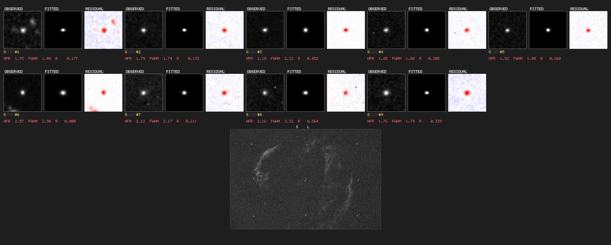

CLI Reference
One binary, many tools. psf-guard --help lists everything and
every subcommand has a detailed --help; this page is the
guided tour.
Serving the grader UI
# Serve (registers the DB in the shared registry on first run)
psf-guard server <database> <image-dirs...> [--port 3000]
# TOML config for server knobs (port, cache, pre-generation, worker ratios)
psf-guard server --config psf-guard.toml
# Throwaway session that doesn't touch your real registry
psf-guard server --registry /tmp/scratch.json <db> <dirs...>
# Bind localhost only (default binds 0.0.0.0)
psf-guard server --host 127.0.0.1 <db> <dirs...>Multiple image directories are scanned in priority order (first hit wins). The server manages every database in the registry, not just the one passed on the command line — see Configuration.
Import FITS libraries
# Build and register a fresh Target Scheduler database
psf-guard create-db archive.sqlite ./lights ./more-lights --name "Archive"
# Preview and then import new frames into an existing database
psf-guard import archive ./new-lights --dry-run
psf-guard import archive ./new-lights
# Preview removal of projects made by an import
psf-guard remove-imported archive --dry-runThe first pass reads headers only and leaves frames Pending. It derives projects, targets, shared exposure templates, and plans without waiting for star detection or plate solving. See Import & Plan for grouping, quality backfill, database paths, and UI controls.
Quality screening
psf-guard screen-fits ./lights # per-frame verdicts
psf-guard screen-fits ./lights --annotate ./diag # diagnostic PNGs
psf-guard screen-fits ./lights --regrade-db my-db --dry-run
psf-guard screen-fits ./lights --format json # or table, csvThe database-free command runs spatial and photometric screening.
--regrade-db additionally loads the intended Target Scheduler
coordinates, runs fresh Seiza plate solves, and sends supported recommendations
through the same grader. Details: Quality Screening
and Astrometry Quality. When orbital
elements are already cached, it also applies the cache-only
Satellite Tracks prediction and pixel-alignment
analysis. Prediction alone warns; a reviewed rejection requires a matched
high-risk trail.
Reject archival
psf-guard move-rejects --db <slug> [--dry-run] [--project NAME] [--target NAME]
psf-guard restore-rejects --db <slug> [--all] [--image-id N] [--dry-run]Details: Rejects & Sync.
Two-database sync
psf-guard sync pull --from telescope.sqlite --to my-db
psf-guard sync planning --from my-db --to telescope.sqlite
psf-guard sync grades --from my-db --to telescope.sqliteDetails: Rejects & Sync.
Star detection & PSF analysis
# Detect stars and compare against database values
psf-guard analyze-fits image.fits [--detector nina|hocusfocus] [--compare-all]
# Annotated star map
psf-guard annotate-stars image.fits [--max-stars 50]
# PSF fit residuals — single star or a grid
psf-guard visualize-psf image.fits [--star-index N]
psf-guard visualize-psf-multi image.fits [--num-stars 25]
# PSF fitting performance benchmark
psf-guard benchmark-psf image.fits
visualize-psf-multi: observed / fitted / residual grids
with Moffat & Gaussian models.FITS utilities
psf-guard stretch-to-png image.fits -o output.png # MTF auto-stretch
psf-guard read-fits image.fits # header/metadata dumpDatabase queries & manual grading
psf-guard list-projects -d database.sqlite
psf-guard list-targets "Project Name" -d database.sqlite
psf-guard dump-grading -d database.sqlite [--project NAME]
psf-guard show-images <IDS> -d database.sqlite
psf-guard update-grade <ID> rejected -d database.sqlite
psf-guard regrade database.sqlite [--dry-run] # statistical re-gradingBatch commands also support statistical outlier detection
(--enable-statistical): per-target/filter HFR and star-count
distribution analysis plus sequence-based cloud detection. Details in
docs/STATISTICAL_GRADING.md.